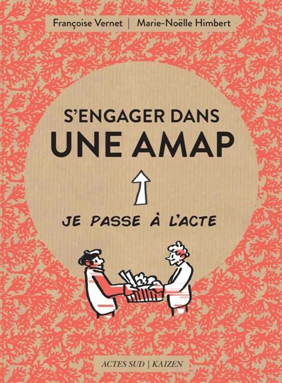

Fukuoka
Réflexions d'un paysan japonais qui a fait le choix de faire confiance à la nature... Et ça a marché.
Pierre Rhabi
Sobriété heureuse : chacun apporte sa goutte d'eau, comme le colibri.
Passer à l'acte, Actes Sud
Adhérer à une AMAP, avec votre serviteur interviewé en page 21.
St François
Premier écologiste : ma soeur la pluie, frère soleil...
François
Ecologie intégrale, Sobriété heureuse, le Créateur est venu visiter la terre qu'il a faite... et il l'a trouvée plutôt belle.
Mon cousin François
Pionnier de l'agroforesterie,
à Mazy
Michel Serres
Le contrat Naturel, pour défendre les droits de la Nature, par analogie avec le "contrat social".
Fermes d'avenir : Maxime de Rostolan
20 ans pour changer le monde.
Les AMAPS de Paris
Le film Demain
Le film "Qu'est-ce qu'on attend"
Les villes en transition
Et pourquoi pas "PARIS X en transition", avec des petites AMAP un peu partout (La Rencontre, La MJ, Le jardin du Presbytère, le Grouin, avec sa monnaie locale...).
Une agriculture agro écologique possible pour nourrir l'Europe :
le rapport IDDRI.